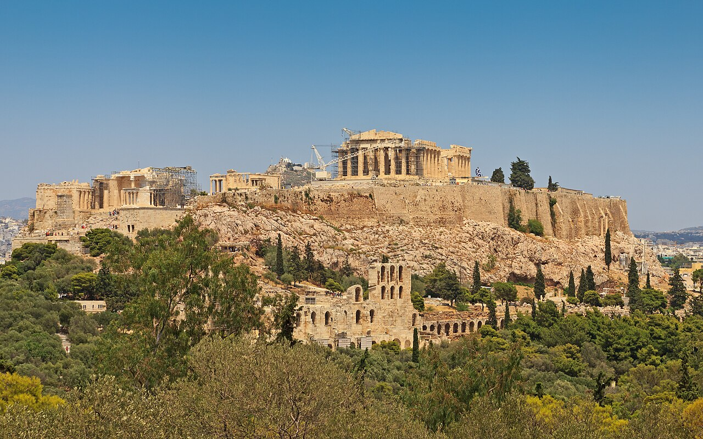

Афіни

Коротка характеристика
Афіни — столиця Греції і найбільше місто країни. Місто назване на честь богині мудрості Афіни, його писана історія налічує понад три тисячі років. Саме тут виникли демократія, театр і багато ідей античної філософії.
Чому я обрав це місто
Афіни — це місце, де історія буквально під ногами: посеред сучасного міста стоять храми, яким понад дві тисячі років. Мене приваблює поєднання античної спадщини, моря і теплого клімату.
Цікаві факти
- Парфенон збудували у V столітті до нашої ери на честь богині Афіни.
- У 1896 році в Афінах відбулися перші Олімпійські ігри сучасності.
- Панатінаїкос — стадіон, повністю збудований з мармуру.
- Біля будівлі парламенту можна побачити зміну почесної варти евзонів.
Визначні місця
- Акрополь і Парфенон
- Музей Акрополя
- Давня Агора
- Стадіон Панатінаїкос
- Район Плака
- Пагорб Лікавіт
Моя оцінка
9 з 10